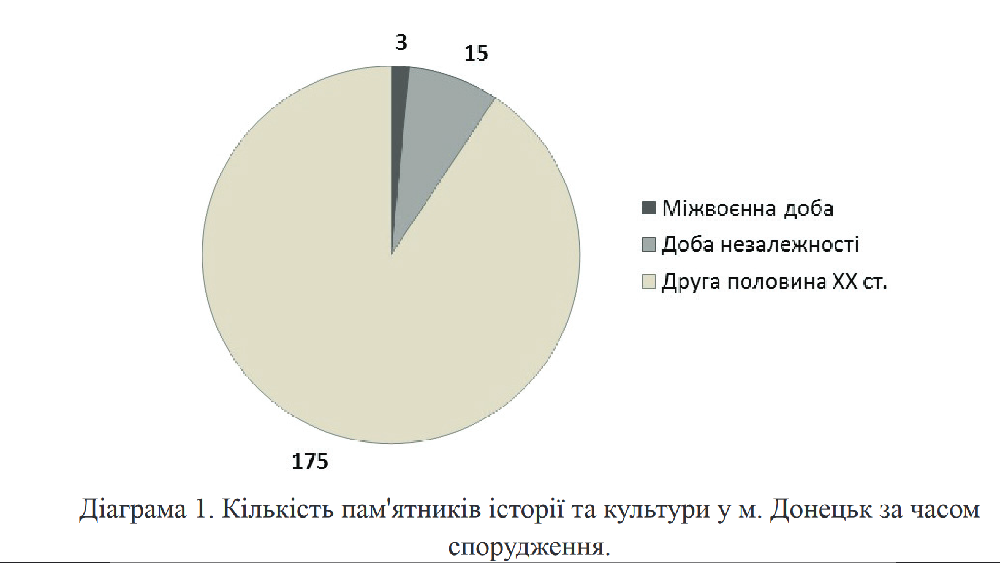

ФОРМУВАННЯ МОНУМЕНТАЛЬНО-МЕМОРІАЛЬНОГО ПРОСТОРУ ДОНЕЦЬКА
Донецьк – місто, розташоване у південно-східній частині України, що почало формуватися з останньої чверті ХVІІІ ст. Протягом ХХ ст. місто Юзівка – Сталіне – Донецьк перетворилося на індустріальний центр у межах Російської імперії, а згодом – СРСР. Відповідно створювався його монументально-меморіальний простір, аналіз якого є метою цього дослідження. Задля її реалізації опрацьовано законодавчі документи, реєстри пам’яток історії та культури, статистичні дані, періодичну пресу. У статті показано, що монументальна традиція Донецька була сформована переважно за радянської доби, найінтенсивніше протягом 1950–80-х років. Пам’ятники стосувалися знакових для того часу подій – «Великої Жовтневої соціалістичної революції», «Громадянської війни», «Великої Вітчизняної війни», чимало об’єктів присвячено праці, зокрема шахтарській. Вони цілеспрямовано працювали на формування радянської ідентичності містян. Данина українській історії та культурі виявилася в пам’ятниках Т. Шевченку, І. Франку, Б. Хмельницькому. Проте їх встановлення мало формальний характер – всі ці об’єкти, окрім першого, були розміщені на периферії Донецька. Показано, що в роки незалежної України в місті встановлено півтора десятки пам’ятників, присвячених людям, життя та діяльність яких були пов’язані з Донецьком чи Донецькою областю – А. Солов’яненку, Дж. Юзу, жертвам Голокосту, воїнам- інтернаціоналістам, загиблим міліціонерам, жінці-матері, жертвам політичних репресій, жертвам Чорнобильської катастрофи, герою- рятівнику та інші. Практика зведення пам’ятників у порадянські десятиліття орієнтувалася на плекання гордості за визначних земляків, і на цій основі виникав регіональний патріотизм. При цьому пам’ятники радянської доби незмінно зберігалися поряд із новими меморіальними об’єктами, чому сприяла позиція Донецької міської ради, депутати якої неодноразово заявляли про непотрібність знесення радянських меморіалів. У процесі дослідження вийшло дійти висновку про переважно радянське наповнення монументально-меморіального простору Донецька, який і на межі ХХ–ХХІ ст. не зазнав істотних змін, що впливало на формування специфічної ідентичності, яка вкладалася в поняття місцевого, «донецького» патріотизму. Одним із потужних чинників ідентифікації та самоідентифікації є символічний простір. Його складовою виступають пам’ятники, що позначають важливі для певного соціуму смисли. Донецьк – місто, розташоване у південно-східній частині України, що протягом ХХ ст. перетворилося на індустріальний центр спочатку в межах Російської імперії, а згодом – СРСР. Відповідно формувався його монументально- меморіальний простір, що становить дослідницький інтерес. Проблеми регіональної ідентичності Донбасу потрапили в поле зору науковців від початку 2000-х років, коли дослідницький простір поповнився кількома працями з увагою до історичного контексту проблеми. Серед них – робота Г. Куромії «Свобода і терор у Донбасі. Українсько-російське прикордоння, 1870–1990-і роки», в якій для розуміння особливої ментальності жителів регіону використана історична ретроспектива. Свою книгу автор завершив словами: «Диктатор тероризував Донбас тому, що цей регіон символізував свободу» (Kuromiia 2002, 482). Через п’ятнадцять років С. Кульчицький і Л. Якубова в дослідженні з промовистою назвою «Триста років самотності: український Донбас у пошуках смислів і Батьківщини» на основі аналізу історії регіону дійшли низки світоглядних висновків щодо його минулого-майбутнього, серед яких нашу увагу привернула думка про залежність подальшого поступу Донбасу від його спроможності «владнати» свої стосунки з радянською спадщиною, що корелюється з монументально-меморіальним простором Донецька (Kul'chyts'kyi, Iakubova 2016, 701). Приблизно в той же час польська авторка М. Студенна-Скруква, окресливши особливості народження великої промисловості на Донбасі та її місце в радянській системі, показавши страйковий рух у регіоні як вияв кризи відносин держави та шахтарів, звернулася до характеристики порадянського періоду в історії регіону. Всі ці міркування привели дослідницю до висновку про регіональну ідентичність, «яка полягає у можливості дистанціювання від партикулярного використання певного зразка ідентифікації регіональними елітами» (Studenna-Skrukva 2014, 372). Так само у 2000-ні роки з’явилася низка публікацій, в яких порушена проблема ідентифікації та самоідентифікації Донецького регіону та автори яких наголошували на домінуванні у донеччан регіональної ідентичності (авторства Я. Грицака, Н. Черниш, О. Маланчук, М. Кармазіної та інших) (Hrytsak 2007; Chernysh, Malanchuk 2007; Karmazina 2016). Проблему меморіального простору в контексті ідентичності регіону в монографічному розділі «Донбас і Україна» порушив Т. Кузьо (Kuz'o 2018). Нарешті, ще одна група праць безпосередньо присвячена дослідженню меморіального простору України, у яких вивчено й Донецьк (Denysenko, Denysenko 2016). На прикладі пам’ятникового простору міста О. Міхеєва розглянула проблему конструювання спільної пам’яті про минуле, привернувши увагу до яскраво вираженої регіональної ідентичності, що засвідчили соціологічні дослідження та ознаки якої відбилися й у пам’ятниках (Mikheieva 2006; Mikheieva 2013). Проте у згаданих дослідженнях тема меморіального простору Донецька порушена в ширшому контексті інших проблем, хоча і дотичних. Отже, мета цієї розвідки полягає в аналізі монументально- меморіального простору міста, який є втіленням певних ідей і справля(в) є вплив на свідомість його жителів. Дослідження спирається на законодавчі документи, реєстри пам’яток історії та культури («Перелік пам`яток культурної спадщини місцевого значення Донецької області, занесених до Державного реєстру нерухомих пам’яток України» та «Реєстр культурного надбання Донецької області (пам’ятки історії та культури)»), статистичні матеріали, інформацію періодичної преси. Неперервна історія міста за письмовими джерелами простежується від останньої чверті ХVІІІ ст., коли при витоках р. Кальміус була заснована слобода Олександрівка (нині – територія Київського району м. Донецька) (Pirko 2003, 40). Від другої половини ХІХ ст. із формуванням на цій території довкола металургійного заводу робітничого селища Юзівка розпочалася його історія як промислового центру. Статус міста Юзівка здобула в липні 1917 року. Його індустріальний потенціал наростав протягом ХХ ст. в межах Сталіно (з 1924 р.) – Донецька (з 1961 р.). Місто перебувало в епіцентрі радянської індустріалізації: 1941 року в його межах лише підприємств союзного й республіканського підпорядкування налічувалося 223, шахти давали 7 % загальносоюзного видобутку вугілля, заводи виробляли 5 % сталі та 11 % коксу. Отже, Донецьк протягом ХХ ст. розвинувся як індустріальний центр загальносоюзного значення, що не могло не вплинути і на його меморіальний простір. Пам’ять міста втілена в різних формах – назвах, будинках, меморіальних дошках, монументах, брендах тощо. Але найбільш наочними, на наш погляд, виступають монументальні споруди, спрямовані на увічнення найвизначніших подій історії, державних діячів (Denysenko, Denysenko 2016, 187). Перший пам’ятник у Юзівці був зведений царю Олександру II – «Визволителю» у 1916 році, на честь 50-річчя скасування кріпацтва, але через технічні проблеми він упав ще до урочистого відкриття (Fed'ko). Серед об’єктів, які збереглися до сьогодні, найранішими є дві братські могили червоноармійців (1920 р.) та пам’ятник Ф. Дзержинському (1937 р.). До Державного реєстру нерухомих пам’яток України (місцевого значення) («Перелік пам`яток культурної спадщини місцевого значення Донецької області, занесених до Державного реєстру нерухомих пам’яток України») станом на 2016 рік занесено 22 монументи. Два з них – Б. Хмельницькому та Т. Шевченку – позиціоновані як пам’ятки монументального мистецтва, решта мають статус пам’яток історії. Три об’єкти встановлені у міжвоєнні роки. 16 з’явилися впродовж 1943–45 років і вшановують пам’ять про загиблих у боротьбі за звільнення від німецько-нацистської окупації. Це братські могили та три персональні монументи (Ф. Гурову, Ф. Грінкевичу, М. Табунову). Три пам’ятники – О. Пушкіну, Т. Шевченку, Б. Хмельницькому – датовані 1955–72 роками (Perelik pam''iatok). Тобто пам’ятки історії та культури в Донецьку, що перебувають під охороною держави, мають винятково радянське походження. Виразнішу картину формування монументально-меморіального простору Донецька подає «Реєстр культурного надбання Донецької області (пам’ятки історії та культури)». Документом у місті зафіксовано 257 об’єктів місцевого значення, серед яких 193 пам’ятники (Reiestr kul'turnoho nadbannia Donets'koi oblasti). Три з них споруджені у міжвоєнні роки, 15 – у роки незалежної України, найбільше – 175 – з’явилися протягом 1940–80-х років (Діаграма 1) (Reiestr kul'turnoho nadbannia Donets'koi oblasti). За тематичною ознакою 43 пам’ятники пов’язані з «Великою Вітчизняною війною», 39 – братські могили, 20 монументів присвячені подіям «революції та громадянської війни», 15 – радянським діячам, 9 – письменникам, 7 – праці тощо.
Отже, «Реєстр культурного надбання Донецької області» (пам’ятки історії та культури)» засвідчує, що формування меморіального простору Донецька відбувалося переважно протягом другої половини ХХ ст. Монументи відображають передусім історію становлення та розвитку радянської влади на Донеччині, що добре ілюструє, наприклад, могила борців за радянську владу (1921–1922 рр.) чи пам’ятник керівнику «Донецько-Криворізької радянської республіки» Артему (Ф. Сергєєву) в центрі міста на вулиці, що має його ім’я. Досить добре пам’ятники місцевого значення репрезентують тему боротьби проти загарбників у роки Другої світової війни (Stasiuk 2018, 122-3). У радянській монументальній традиції виконані пам’ятники українським діячам – Т. Шевченку, І. Франку, Б. Хмельницькому (єдиний у Донецьку кінний пам’ятник). Показово, що пам’ятник Б. Хмельницькому встановлено в периферійному Пролетарському районі міста, а монумент В. Леніну височить на центральній площі Донецька. Як зауважив І. Симоненко, велика кількість комуністичних пам’яток не є безневинним анахронізмом радянської доби. Адже тиражована монументальна пропаганда тоталітаризму активно працювала й продовжує впливати на ретрансляцію комуністичної міфотворчості новим генераціям українців (Symonenko 2009, 57). У роки державної незалежності символічний пам’ятниковий простір міста поповнювався новими об’єктами. Як показали Г. Денисенко та О. Денисенко, найбільша кількість встановлених у незалежній Україні пам’ятників і пам’ятних знаків присвячена Голодомору 1932–33 років і жертвам політичних репресій (Denysenko, Denysenko 2016, 193). На цьому тлі в Донецьку протягом 1990–2000-х років було встановлено монументи Герою Радянського Союзу Ф. Толбухіну (1995 р.), загиблим міліціонерам (1998 р.), засновнику Донецького металургійного заводу Дж. Юзу (2001 р.), оперному співаку А. Солов'яненку (2002 р.), жінці- матері (2003 р.), жертвам політичних репресій (2005 р.), воїнам- інтернаціоналістам (2006 р.), жертвам Голокосту (2006 р.), герою- рятівнику (2006 р.), ліквідаторам Чорнобильської катастрофи (2006 р.) та інші. За винятком декількох монументів полярного спрямування, переважають пам’ятники землякам і місцевим діячам. Практика зведення меморіальних об’єктів у порадянські десятиліття орієнтувалася на формування регіонального патріотизму, гордості за визначних донеччан. У цьому контексті привертають увагу прижиттєві пам’ятники – С. Бубці, українському легкоатлету, чемпіону Європи та світу, Олімпійському чемпіону у стрибках із жердиною, Герою України, та російському співаку Й. Кобзону, який походив із м. Часів Яр Артемівського району Донецької області. Вони мали на меті увічнити пам’ять про визначних діячів із різних сфер – спорту, мистецтва. У 1999 році на площі біля виставкового центру «Експо-Донбас», а у 2007 році – на бульварі Пушкіна біля будівлі Донецької обласної держадміністрації були встановлені дві копії «Пальми Мерцалова». Це скульптурне зображення пальми, яке виготовили 1896 року робітники Юзівського металургійного заводу О. Мерцалов і Ф. Шкарін для Всеросійської промислово-художньої виставки в Нижньому Новгороді, на якій вона отримала Гран-прі. У 1900 році скульптуру демонстрували на Всесвітній виставці в Парижі, де вона також здобула Гран-прі. Пальма виготовлена з шматка рейки. Її оригінал зберігається в музеї Гірничого університету в Санкт-Петербурзі. За задумом скульптура символізує цілеспрямованість, єдність, багатство і процвітання та є виявом робітничої майстерності (Symvolika). До речі, зображення «Пальми Мерцалова» стало центральним у гербі Донецької області. У Донецьку є пам’ятники, презентовані містами-побратимами: Бохум подарував дзвін (копія), Москва – Цар-гармату (копія), Київ – скульптуру Архистратига Михаїла (оригінал). Принципова відмінність монументального простору Донецька полягає не в новозведених пам’ятниках, а в тотальному збереженні радянських. У місті на початку 2014 року залишалися недоторканими монументи В. Леніну, С. Кірову, Ф. Дзержинському, Артему, «борцям за радянську владу», «полеглим комунарам» та іншим дієвцям «Громадянської» та «Великої Вітчизняної» воєн (Symonenko 2009, 58). При цьому був відсутній монумент, який би вшановував жертви Голодомору, щоправда, 2008 року на центральній вулиці встановлений пам’ятний знак – кам’яна брила, на якій викарбовано: «Тут за велінням наших сердець закладений камінь на будівництво меморіалу всіх невинно убитих і замучених» (пер. з рос.) (Donets'ka obl. Ukrains'ko- kanads'kyi doslidcho-dokumentatsiinyi tsentr). Пам’ятниковий ландшафт міста – результат цілеспрямованої політики місцевої влади щодо непорушності радянського меморіального простору. Зокрема, у вересні 2008 року депутати Донецької міськради майже одностайно відхилили проєкт документа «Про заходи щодо ліквідації символів тоталітаризму у м. Донецьку». Питання було порушено через указ Президента України В. Ющенка «Про заходи у зв'язку з 75-ми роковинами Голодомору 1932-33 років в Україні», яким, зокрема, передбачалося «вжити в установленому порядку заходів щодо демонтажу пам’ятників та пам’ятних знаків, присвячених особам, причетним до організації та здійснення Голодомору 1932–33 років в Україні та політичних репресій, а також щодо перейменування в установленому порядку вулиць, площ, провулків, проспектів, парків та скверів у населених пунктах України, назви яких пов’язані з такими особами» (Ukaz Prezydenta Ukrainy № 250/2007 «Pro zakhody u zv'iazku z 75-my rokovynamy Holodomoru 1932-1933 rokiv v Ukraini»). Проєкт відповідного рішення підтримали лише два депутати, 48 висловилися проти (Gorsovet Donetska otkazalsia snosit' sovetskie pamiatniki). Така реакція міського депутатського корпусу повністю вписується у спостереження Т. Кузьо щодо того, що з-поміж регіонів України в Донбасі найбільше респондентів (72 %) підтримали твердження, що локальні громади мають право вшановувати своїх героїв і традиції (Kuz'o 2018, 303). Напередодні футбольного чемпіонату Євро- 2012 донецький міський очільник О. Лук’янченко заявив на прес- конференції: «Європейські цінності не дозволяють зносити пам'ятники до заходів. Ви мене вибачте, чому Німеччина сьогодні з Марксом ?! Я можу назвати низку пам'ятників таким же діячам, і вони ні в кого не викликають запитань» (пер. з рос.) (Mėr Donetska otkazalsia snosit' sovetskie pamiatniki). Таку саму позицію демонструвало встановлення 8 вересня 2009 року, у День визволення Донбасу від нацистських окупантів, у центрі Донецька пам’ятника генералу Ватутіну. Виступаючи на церемонії відкриття, тодішній міський голова О. Лук’янченко заявив, що пам’ятник генералу – своєрідний протест мешканців міста проти «переписывания истории официальным Киевом». Наголошувалося на тому, що пожертви на його спорудження зробили фонд Б. Колеснікова (200 тис. грн), обласний осередок Компартії (100 тис.), районні організації Партії регіонів, ветеранські організації та пересічні жителі – всього було зібрано 698 тис. грн. При цьому варто нагадати, що генерал М. Ватутін – Герой СРСР – не мав жодного відношення до міста чи області, він не брав участі в боях за звільнення Донбасу від окупації. Тому спорудження пам’ятника мало на меті не вшанування полководця, а стало зайвим приводом згадати недобрим словом «бандерівців», від рук яких за радянською версією загинув генерал (Rodionov 2009). Це приклад цілеспрямованого використання меморіального об’єкта для розпалювання ворожнечі всередині Української держави, протистояння між її Сходом і Заходом, наголошення на інакшості донеччан. Невипадково цей об’єкт з’явився восени 2009 року, адже наближалися чергові президентські вибори, а з ними й необхідність мобілізувати «свій» електорат. Отже, монументально-меморіальний простір Донецька сформовано переважно за радянської доби, протягом якої на місто покладалася місія забезпечення стратегічно важливих для СРСР галузей економіки. Реалізація такого завдання вимагала, серед іншого, відповідного світоглядного підґрунтя, на що і спрямовувалися меморіальні об’єкти. Тому не дивно, що пам’ятники стосувалися знакових для того часу подій – «Великої Жовтневої соціалістичної революції та громадянської війни», «Великої Вітчизняної війни», чимало об’єктів присвячені праці, зокрема шахтарській. Вони цілеспрямовано працювали на формування радянської ідентичності. Данина українській історії та культурі обмежувалася монументами Т. Шевченку, І. Франку, Б. Хмельницькому. У роки незалежності в місті встановлено півтора десятка пам’ятників, переважно присвячених людям, життя та діяльність яких була пов’язана з Донецьком чи Донецькою областю. Ці характеристики цілком можна прикласти до будь-якого населеного пункту порадянської України. Монументально-меморіальний простір Донецька вирізняв(єть)ся наповненням переважно радянського змісту, який і на межі ХХ–ХХІ ст. не зазнав істотних змін, на відміну від більшості великих міст України. Ця обставина, безумовно, впливала на формування специфічної ідентичності, що вкладалася в поняття місцевого, «донецького» патріотизму.